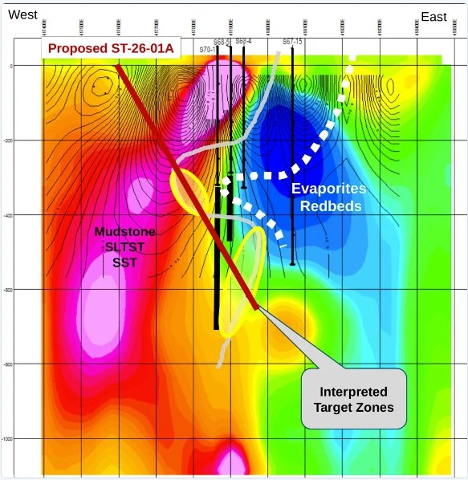
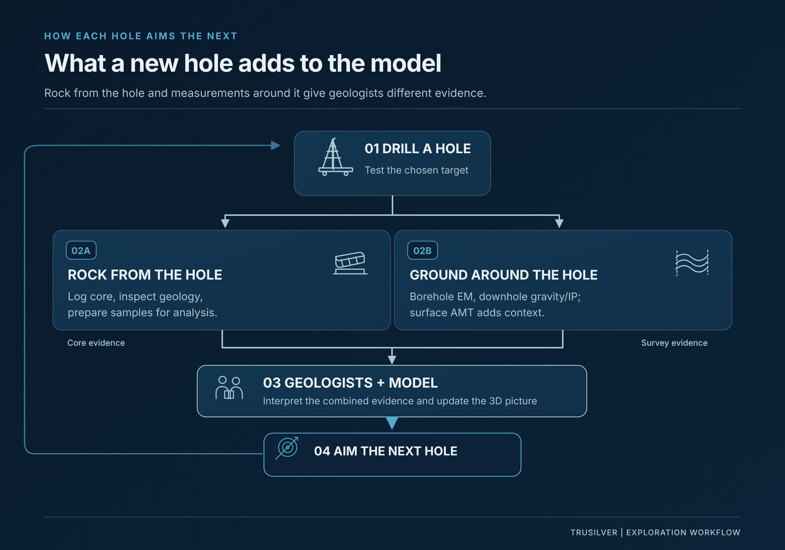

At a glance
| Company | TruSilver Metals Corp. (TSXV: TAG), a Canadian silver exploration company. |
| Project | Sturgis-Walton Silver Project, Hants County, Nova Scotia. 1,120 hectares, 100% owned. No NSR exists on the property. |
| The model | Being built in-house by our Project Geologist, Jeff Burke, P.Geo., from our own surveys and drilling, the Walton Mine record and the data each new hole adds. TruSilver owns the IP. |
| Drill plan | Five diamond drill holes, about 3,500 metres. The drilling permit is in place to March 2028. |
| Status | Drilling expected to begin in early November 2026. 3D model launch planned for December. |
Where we’re drilling
Here’s where we’re drilling, and why.
In 1955, a drill under the barite pit at Walton, in Hants County, Nova Scotia, came up with silver-rich sulphides. From 1961 an underground mine took silver, lead, zinc and copper out of that find, down to 314 metres. Flooding shut the underground through the 1970s, and mining stopped in 1978.1
Our Sturgis-Walton project sits next to that mine, 1,120 hectares that we own outright.2, 1 We think the system that fed the mine keeps going, south and deeper, and our surveys back it up: on our ground, the gravity and AMT response reads larger and stronger in 3D than over the historically mined Walton orebody.1
In November we start drilling to find out, and the first hole is already drawn.2, 1 Here’s the picture.

Jeff Burke, our Project Geologist, put it the way a geologist does, looking at the AMT:
“It actually looks like a trunk and branch. It’s pretty compelling when it physically looks like that.”3
That’s the shape we’re testing. The geology behind it we’ve already spoken about in a report explaining the branch-and-trunk theory behind our drill target.
Jim and Jeff
Jim knows the ground, and Jeff keeps bringing him questions.
Jim Michaelis has spent more than 40 years on Walton-Sturgis, with Gulf and then Billiton, and he built the fold model behind our 2023 hole.1 By the time Jeff arrived, Jim had already digitized the archive, saving months (if not years) of prep time. We’re talking decades of drill logs and mine records, ready to use for Jeff on day one.3
Jeff came in with 20 years in exploration, six of them in AI start-ups.1 He takes a geological workflow, the steps he’d work through by hand, and turns it into code. “That turns into a script, and we can use that in almost any interface.”3 So instead of waiting on a developer, or relying on third-party IP, he builds the tool himself and puts the surveys, the chemistry and the old drill logs on one screen.3
Then he takes what he finds to Jim. The way Jeff tells it, his research turns up something odd, he asks about it, and Jim says, “Well, you know what? I did see something like this.”, and according to Jeff, “That’s when the magic starts to happen.”3
The duo talks most days, and they’ve been in the field together. That’s a hand-off most projects never get; usually the knowledge leaves with the people who had it.3 As our presentation puts it, most of our team lives an hour from the drill.1 Here are the people behind TruSilver and who owns its shares.

What goes into the model
Finding a deposit costs more than it used to, so the aim has to be better.
MinEx Consulting keeps the industry’s discovery count. In 2009, the world found 202 significant mineral deposits, but now the industry only finds about 70 to 90 a year, and the ones still out there sit deeper.4 In the 2010s a base-metal discovery sat under 193 metres of cover on average.4
- 70 to 90Significant deposits the world now finds in a year, down from 202 in 2009.4
- US$200 millionWhat it costs, on average, to find one.4
- 21%The share of the world’s exploration money that went to early-stage ground in 2025, the lowest on record.5
Put that beside us. We raised C$2.83 million ahead of drilling.6 Call it US$2 million, about one percent of what the industry spends to find one deposit.4 Nobody on that budget gets to drill blind. Our aim needs to be on point, and that precision aim is what Jeff is building for us.
The same MinEx paper says AI pays off first near existing mines, where there’s a record to learn from.4 That’s Walton. Decades of drilling, the mine records and three surveys, compiled into one 3D model that ranks where the silver is likeliest.1 Data tools, including AI, speed up the work. Experienced geologists guide the process and make every call.1
One piece of it is a measure Jeff calls the silver ratio: a statistical test that zones in on the ground most likely to carry silver. In the trade it’s called mineral prospectivity mapping, and the geology is what determines how that flows. First, he ran it on the surface samples, against the geophysics. Now he’s running it on the core, 34 elements or more, looking for which ratios match and where they overlap with what the other surveys saw.3
Jeff draws the line this way. “There’s uncertainty and there’s risk, and people confuse the two. You have more information out of the gate. It’s less risk now.”3
Every figure, with its source
| What went in | What it is |
|---|---|
| 2021 magnetic survey | One drone survey, 163 line-kilometres, covering the mine and Sturgis on the same trend.1 |
| 2024 gravity survey | Ground gravity, with 3D analysis. It outlined the Sturgis Target: an anomaly of more than 1 mGal, 800 metres long as mapped, which we interpret at about 1,200 to 1,400 metres once the fold is straightened out.1 |
| 2024 AMT survey | Three large conductors, seen to about 700 metres.1 |
| The 2023 hole, ST-23-001 | 12.15 g/t silver over 10.5 metres, and 48.8 g/t silver over 19.0 metres (533 to 552 metres) with 0.19% copper. Drilled lengths.1 |
| Two 1960s holes, deepened in 2026 | S70-1Ext and S68-5Ext, both deepened to the Macumber host formation, with sulphides logged in both. Assays pending.1 |
| The chemistry | 34 elements, their ratios and where they overlap with the surveys.3 |
| The archive | Decades of drill logs and mine records, digitized by Jim Michaelis.3 |
Three signals
Three different readings, and they’ve all pointed us at the same ground.
A hundred years ago, prospectors found three quarters of the world’s deposits by walking the ground. Today they find fewer than one in ten.4 And the rest mostly get found by people reading instruments, and three of those readings sit under this page.
Gravity reads how dense the rock is. Magnetics reads how magnetic it is. AMT reads how well it conducts electricity.1 Three different data sets, and at Sturgis all three came back pointing us toward the same patch of ground.1
The twist is barite.
Barite, Jeff says, is an insulator. So a conductivity reading on its own can mislead, in the geophysics and in the assays, which is why we ran three surveys and not one, and why the downhole surveys tighten them further.3 Here’s how three geophysical surveys led us to one drill target.
The earlier holes
What the earlier holes taught us.
We’ve drilled here before. In 2023 our hole cut 48.8 g/t silver over 19.0 metres, with 0.19% copper.1 This year we deepened two 1960s holes and both reached the same host rock. Those assays are still pending.1
Jeff’s read on the old holes is quite useful for us. Deep holes drift, and when he laid them over the survey picture, they came out just outside the zone where the readings overlap best. “We were getting close, but we weren’t that close.”3
So the first hole of our November drill program goes in where that overlap is, from the west, designed to cut both target zones.1 “For the information that’s given,” Jeff says, “it’s as good as it gets.”3
Each hole teaches the next
Each hole teaches the next.
When hole one goes down we’ll get two kinds of information at once. The core, which is rock we can log and sample. And the ground beside the hole, which the core never touches. Borehole EM goes down the hole and looks sideways for conductive sulphides the drill may have passed.1 Downhole gravity and downhole IP read the same hole, and an extended ground AMT survey adds to the picture from the surface.1 The surface picture also carries the older airborne surveys, VTEM among them, and the surface chemistry as it’s updated.3
All of it feeds one 3D model, and that model’s job is to aim the next hole.1 Jeff’s word for it is vectoring. “We’re going to get a direction. The next hole should go this way.”3
“You get more insight the more you actually drill,
because of the data that’s coming in and you’re ready to capture it and use it.”

| When | What happens |
|---|---|
| November 2026 | Drilling starts. Five holes, about 3,500 metres.2, 1 |
| As each hole progresses | Borehole EM searches beside the hole for conductive sulphides.1 |
| December 2026 | 3D model launch: the model with the first holes’ data in it, and the targets it gives. More precise targets as new data lands, with target updates to follow.1 |
| Winter 2026 to 27 | Assays, interval by interval. Released as they arrive, not held for the whole hole.1 |
Timing depends on the drill contract, site conditions and laboratory turnaround.1
That’s what goes into hole one. What comes out of it is the first thing the model learns, and the first thing we send you.
The model stays with the Company
The model stays with us. It’s ours.
At the end of the day, TruSilver owns the IP.1 Jeff is building it on our time, from our data, and it doesn’t go anywhere when the program ends. His version of it is blunter. “It’s not a consultant saying here’s a map, we’ve taken the data and we’re going to keep training our models with it. This is highly specific and focused on the company’s goals. We’re retaining what I’m building.”3
For a sense of what the biggest money in the business thinks of this way of working: KoBold Metals, which calls its approach AI-and-human-driven, took Mingomba in Zambia from an exploration project in late 2022 to breaking ground on the mine’s shafts in April 2026, on a project KoBold says would typically take more than fifteen years to reach production.7 Ours is being built here, for this ground, and it’s ours.
Why here
Why Nova Scotia, and why this ground.
Jeff lives here. Jim lives here. Jeff’s reason for looking here is simple enough. “Not a lot of people have paid attention over here, and I have, for years, just prospecting and looking at stuff, trying to find what would work here… I’m a guy that likes the underdog, or the overlooked, or has something to prove.”3
Overlooked is the word. Even his uncle who’s lived in this province for eighty-some years had never heard of the Walton Mine.3
But those in charge of the province haven’t overlooked its existence. Nova Scotia put silver on its critical minerals list in May 2025,8 and it has put C$150,000 of grant money into this ground.1 In late 2025 Rio Tinto staked every open claim in the Minas sub-basin around us, looking for copper.9 Here’s why Rio Tinto’s claim staking matters to our Nova Scotia story.
And the metal. The computers behind AI run on silver too; the Silver Institute’s 2026 survey names growth in AI infrastructure among the things holding up silver’s industrial demand.10 We’re using new tools to find a metal the new tools need. Here’s why most of the world’s silver comes from by-product mines.
When you’ll hear
When you’ll hear from us.
Five holes. One model. And with every new hole, our AI learns more and becomes more refined.
The target’s mapped, the first hole’s drawn, and the model’s just waiting on more core.